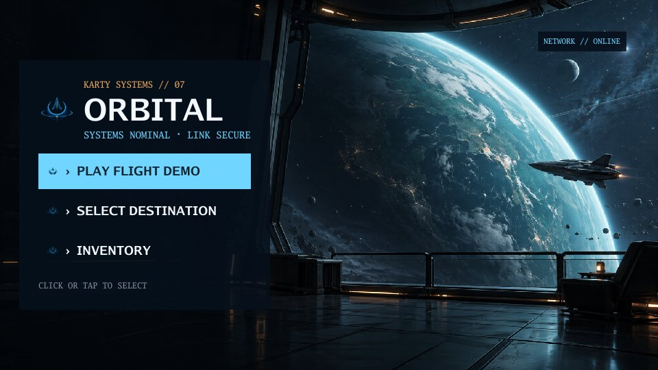
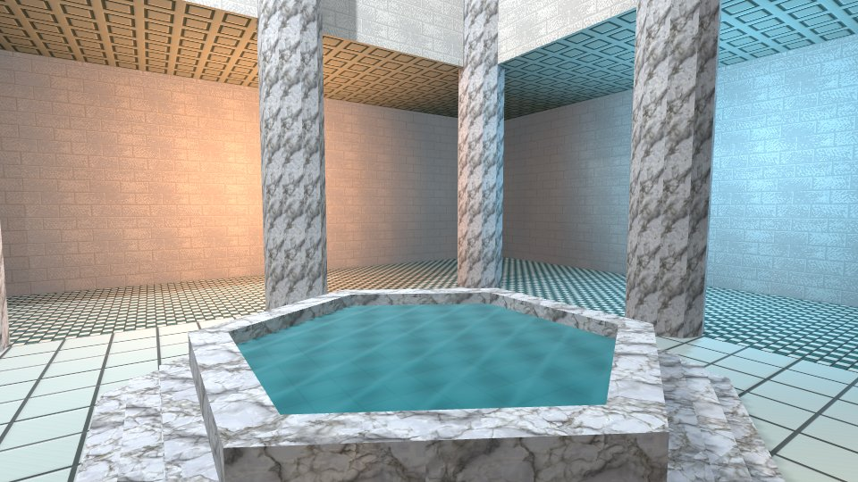

Hangar: industrial 3D level
Walk through connected rooms and stairs. Study layered materials, baked lighting, a camera-mounted torch, animated machinery and particles.
Play it. See how it works.
Explore a scene, try an interaction, then open the source. Each sample shows a different part of building with Karty.
Walk through connected rooms and stairs. Study layered materials, baked lighting, a camera-mounted torch, animated machinery and particles.

Import images, sound, music and video. Play overlapping sound effects, toggle looping music and replay a video in one scene.

Build a game interface with KartUI tabs, settings, tooltips and inventory. Change the ship and thruster power while the flight runs.

Build textured 3D rooms with reusable geometry and lights. Switch between first-person and isometric cameras, inspect actors and try touch controls.